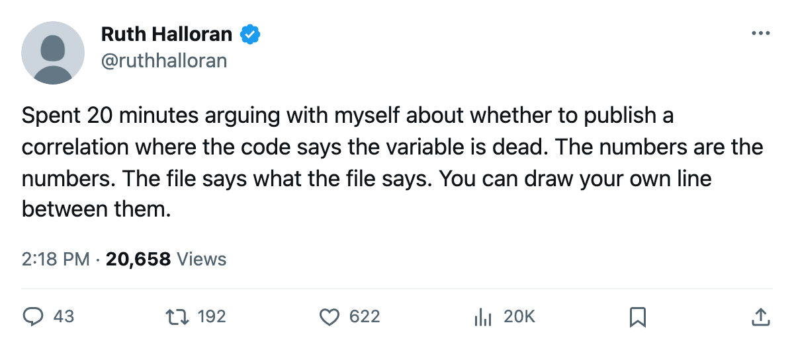
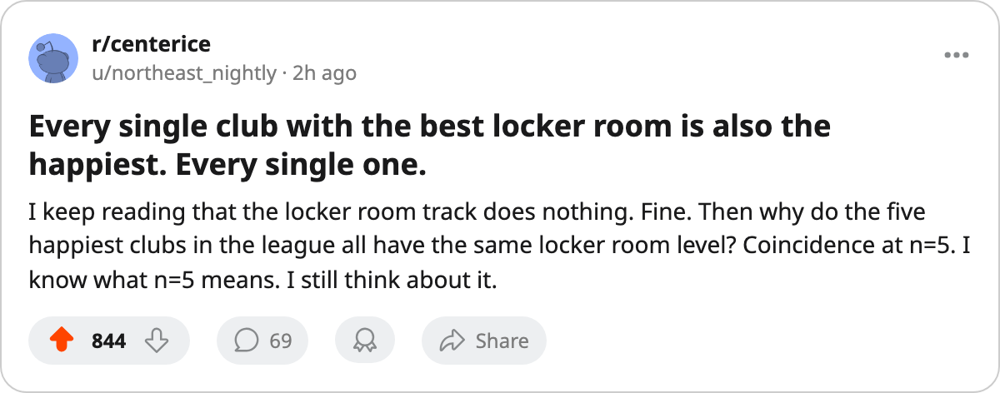

The Unread Curve: Five Clubs Built a Level 4 Locker Room, and Those Five Clubs Are the Five Happiest in the League
The tuning file gives the track a curve against morale. This build reads nothing from it. The record holds both.
 Ruth HalloranBusiness of hockey · The Building
Ruth HalloranBusiness of hockey · The Building
The five clubs with a level 4 locker room are the five happiest clubs in the league.  Vancouver Canucks sits at 98.3 on the Bureau's morale scale.
Vancouver Canucks sits at 98.3 on the Bureau's morale scale.  Florida Panthers is at 97.9.
Florida Panthers is at 97.9.  Tampa Bay Lightning at 97.7,
Tampa Bay Lightning at 97.7,  Los Angeles Kings at 97.2,
Los Angeles Kings at 97.2,  Colorado Avalanche at 96.7. The sixth-happiest club,
Colorado Avalanche at 96.7. The sixth-happiest club,  St. Louis Blues at 94.0, carries a level 3 locker room. The pattern holds from the top with no exceptions.
St. Louis Blues at 94.0, carries a level 3 locker room. The pattern holds from the top with no exceptions.
The league's own tuning file lists the locker room as a track that moves morale. The current build does not read that curve. Four tracks move a player rating: equipment, workout, practice, travel. Four are switched off entirely: coaching, medical, marketing, legal. Two carry numbers in the file that nothing in this pipeline reads: the locker room and the scouting room. The locker room is one of those two. Its effect cannot be shown here.
The record shows what it shows.
Four of the five clubs at level 4 got there by spending. Colorado Avalanche, Los Angeles Kings, Tampa Bay Lightning and Vancouver Canucks all filed a locker room upgrade between 2005-05-29 and 2005-05-31, moving from level 3 to level 4. Florida Panthers is the only one that started the record at 4.  Pittsburgh Penguins filed the most recent upgrade in the league on this track, moving from 2 to 3 between 2005-10-20 and 2005-10-22. Their club average is 92.4, good for 7th.
Pittsburgh Penguins filed the most recent upgrade in the league on this track, moving from 2 to 3 between 2005-10-20 and 2005-10-22. Their club average is 92.4, good for 7th.
The bottom of the table is less clean. Six clubs carry a level 0 locker room, the worst in the league. Their morale ranges from  Toronto Maple Leafs at 88.2 to
Toronto Maple Leafs at 88.2 to  Boston Bruins at 90.2. Three clubs with a level 1 room sit below two of those level 0 clubs:
Boston Bruins at 90.2. Three clubs with a level 1 room sit below two of those level 0 clubs:  Philadelphia Flyers at 88.6,
Philadelphia Flyers at 88.6,  Buffalo Sabres at 88.8. The inverse does not hold the way the top does. A level 4 room appears in the file to guarantee a top-5 morale. A level 0 room does not guarantee a bottom-5 morale.
Buffalo Sabres at 88.8. The inverse does not hold the way the top does. A level 4 room appears in the file to guarantee a top-5 morale. A level 0 room does not guarantee a bottom-5 morale.
| Club | Locker room | Club avg morale | Morale rank |
|---|---|---|---|
| VAN | 4 | 98.3 | 1 |
| FLA | 4 | 97.9 | 2 |
| TB | 4 | 97.7 | 3 |
| LA | 4 | 97.2 | 4 |
| COL | 4 | 96.7 | 5 |
| STL | 3 | 94.0 | 6 |
| PIT | 3 | 92.4 | 7 |
| WSH | 2 | 93.3 | 8 |
| CHI | 2 | 92.3 | 9 |
| DET | 2 | 91.9 | 10 |
| PHX | 2 | 91.4 | 11 |
| NYI | 2 | 90.6 | 12 |
| NJ | 2 | 89.8 | 13 |
| DAL | 1 | 92.0 | 14 |
| ANA | 1 | 91.5 | 15 |
| NSH | 1 | 91.0 | 16 |
| NYR | 1 | 90.8 | 17 |
| MTL | 1 | 90.6 | 18 |
| SJ | 1 | 90.5 | 19 |
| EDM | 1 | 90.5 | 20 |
| OTT | 1 | 90.3 | 21 |
| CGY | 1 | 89.9 | 22 |
| BUF | 1 | 88.8 | 23 |
| PHI | 1 | 88.6 | 24 |
| MIN | 0 | 89.9 | 25 |
| ATL | 0 | 89.5 | 26 |
| CAR | 0 | 89.3 | 27 |
| CBJ | 0 | 89.2 | 28 |
| BOS | 0 | 90.2 | 29 |
| TOR | 0 | 88.2 | 30 |
The five clubs at the top of the morale standings carry no other common facility trait. Colorado Avalanche has a level 0 workout room and a level 0 practice room, tied for the worst in the league on both tracks. Their live sum is -14, middle of the pack. Los Angeles Kings carries a -19, the heaviest penalty on the sheet. Their morale is 97.2 anyway.
Michael Burt of Tampa Bay told The Tunnel's Jan Kowalczyk about the travel room he moved this month: "1-2 away tells you the -4 is still too big." He did not mention the locker room. Tampa Bay's is at 4, unchanged since May. Their morale has not moved from 97.7.
Twelve clubs have filed a locker room upgrade since the record opened in December. Three of those upgrades happened in the 2005-05-29 to 2005-05-31 window and landed those clubs at level 4. Twelve is a lot of spending on a track the build does not read. Four of those twelve are now in the morale top 5. Whether that is a coincidence or not is the question the file cannot answer and the pipeline will not confirm.

